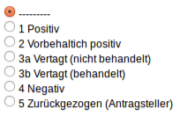
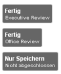

Sitzungsassistent¶
Der Sitzungsassistent ist Ihr permanenter Begleiter im Zeitraum der Sitzung.
TOP ohne Studienbezug¶
Beenden Sie den TOP mit einem Klick auf Fertig.
TOP mit Studienbezug¶
Ein positives Gutachten ist gekennzeichet durch einen grünen Knopf, ein negatives durch einen roten Knopf. Mittels eines Klicks auf den Knopf Ihrer Wahl erscheint der Kommentar des Sitzungsmitgliedes im Kommentarfeld.
Votum¶
Tragen Sie das Ergebnis der Abstimmung ein. Unterhalb der Voten-Auflistung befindet sich ein Kommentarfeld. Hier können Sie ein Kommentar zum Votum schreiben. Das Feld vergrößert sich automatisch bei einem Zeilenumbruch.
TOP abschließen¶
Schließen Sie entweder den TOP ab, indem Sie auf den zutreffenden Fertig-Knopf klicken, oder wählen Sie Nur Speichern um später zu diesem TOP zurückzukehren.